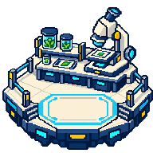

格式v1 / 包 pbl_synthetic_four_templates 1.0.0 / 内容 1.0.0 / 主题 campus 1.0.0 / 应用 mentor-workspace-v1
【测试】综合学习模板
模板：learning；导入后准备中
导入后逐项改成真实教材；当前只是验收样例。
课堂回顾
【测试】课堂回顾填写位置，正式内容由导师维护。
【测试】文章段落。图片和资料引用在服务端映射为真实ID。

【测试】素材示例资料：【测试】填写说明
草稿卡片：【测试】五题型卡片
这张卡片默认草稿；逐项核对后单独发布。
single_choice：【测试】选择A
选项：[{"value":"a","label":"A"},{"value":"b","label":"B"}]
参考答案："a"
解析：测试单选题字段。multiple_choice：【测试】选择A和B
选项：["A","B","C"]
参考答案：["A","B"]
解析：测试多选题字段。
true_false：【测试】当前资料是测试材料
选项：[]
参考答案：true
解析：仅供格式验收。
fill_blank：【测试】填写：测试
选项：[]
参考答案：{"blanks":[["测试"]]}
解析：测试填空答案结构。short_answer：【测试】说明你的观察
选项：[]
参考答案："依据实际观察作答。"
解析：开放题交导师按原规则评审。
报告与反思引导
【测试】学习报告填写引导，评分沿原规则。
【测试】反思引导：记录过程与依据。
【测试】本站图片
【测试】填写说明